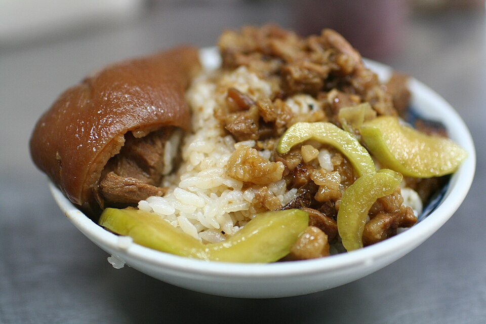
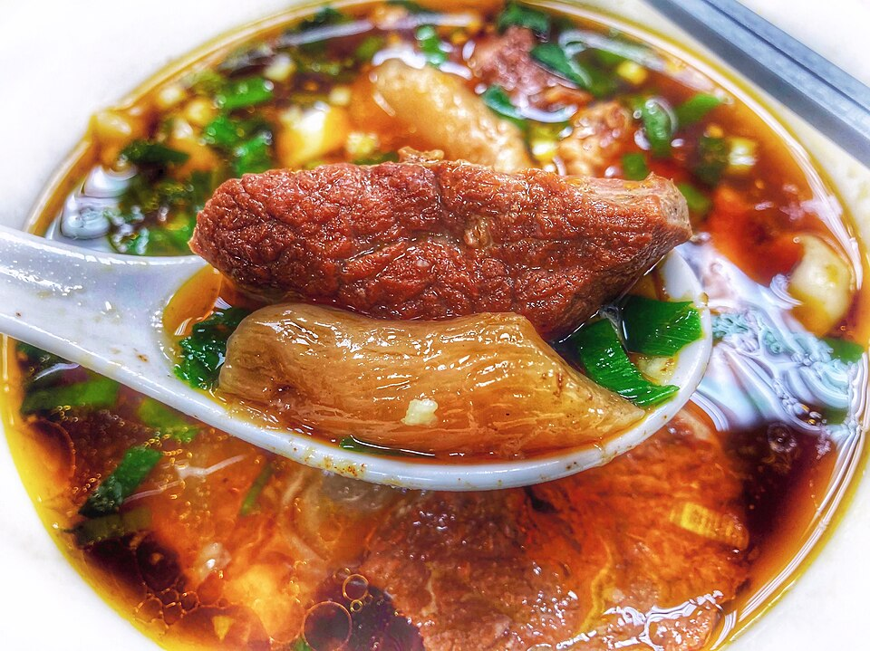
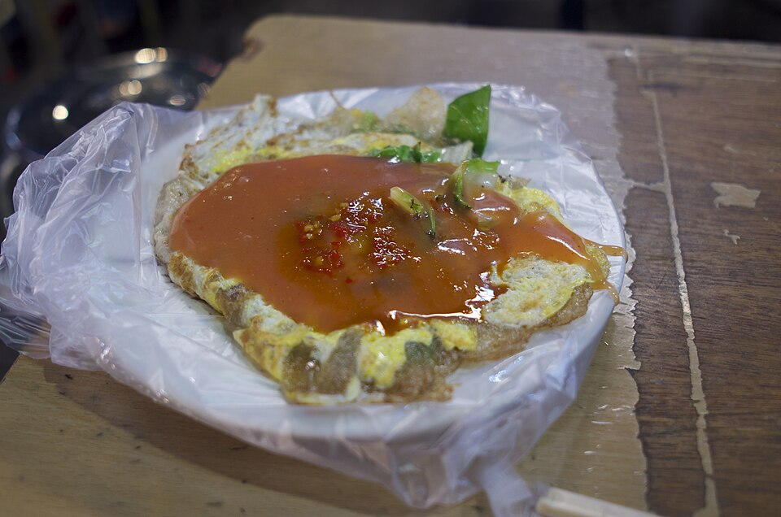
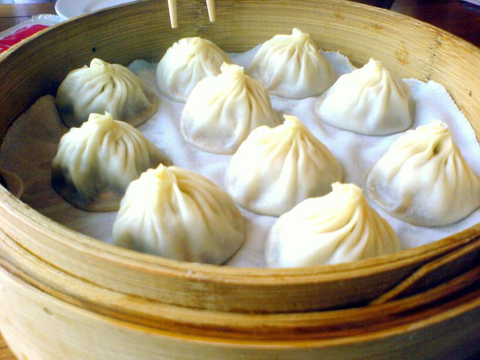
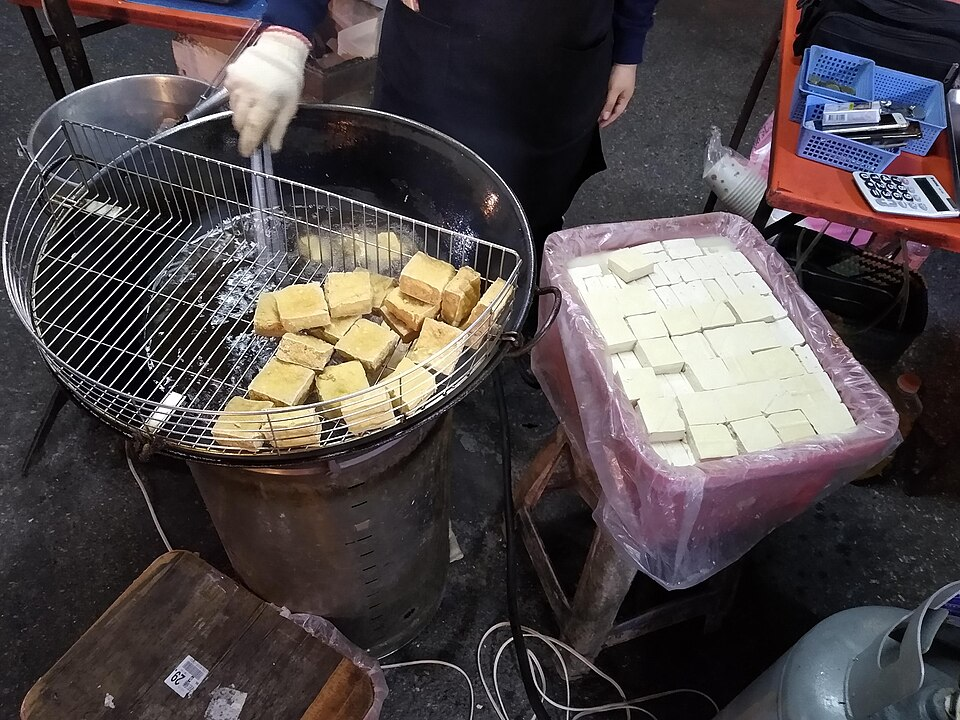

滷肉飯

切碎的豬肉以醬油、冰糖與香料慢火滷製，淋在白飯上，香氣濃郁。
- 主要食材：豬肉、醬油、紅蔥頭
- 常見配菜：滷蛋、醃黃蘿蔔
小吃是台灣飲食文化的靈魂。這些料理價格親民、隨處可見，卻各有悠久的歷史，是許多人心中「家的味道」。

切碎的豬肉以醬油、冰糖與香料慢火滷製，淋在白飯上，香氣濃郁。

大塊牛肉與牛筋燉煮入味，搭配Q彈麵條與濃郁湯頭，是許多人的心靈料理。

新鮮蚵仔、雞蛋與青菜，加上地瓜粉漿煎成，最後淋上特製甜辣醬。

薄薄的麵皮包入豬肉餡與湯汁，蒸熟後一口咬下湯汁四溢，記得小心燙口。

發酵過的豆腐經油炸後外酥內嫩，搭配台式泡菜與醬汁，讓人一吃上癮。
在家也能做出簡單版的滷肉飯，只要依照以下步驟：
| 小吃 | 主要食材 | 參考價格 |
|---|---|---|
| 飯麵類 | ||
| 滷肉飯 | 豬肉、白飯 | 30–60 元 |
| 牛肉麵 | 牛肉、麵條 | 150–300 元 |
| 點心類 | ||
| 蚵仔煎 | 蚵仔、雞蛋 | 60–90 元 |
| 小籠包 | 豬肉、麵粉 | 100–250 元（一籠） |
| 臭豆腐 | 發酵豆腐 | 50–80 元 |